from sympy import *
import numpy as np
from scipy import signal
import pandas as pd
import matplotlib.pyplot as plt
import SymMNA
from IPython.display import display, Markdown, Math, Latex
init_printing()10 Initial Conditions
In this chapter, initial conditions for capacitors and inductors are explored. Initial conditions refer to the state of the energy storing elements, capacitor and inductors, at \(t = 0\), the point in time where the analysis starts. In s-domain analysis, the initial conditions are included in the analysis by using auxiliary sources in the transformed models of the capacitors and inductors.
Unless the initial conditions are specified, the voltage on the capacitors and the current through the inductors are assumed to be zero. Initial conditions for capacitors and inductors are essential in transient circuit analysis as they represent the energy stored in these components immediately prior to a change in the circuit, such as a switch opening or closing at time \(t=0\).
Mathematically, this is expressed as \(v_C(0^-) = 0\) then \(v_C(0) = V_{ic}\) and \(i_L(0^-) = 0\) then \(i_L(0)=I_{ic}\), where \(0^-\) is the first instant of time to the left of \(t=0\). Some engineering text books use \(v_C(0^-) = v_C(0)\) and \(i_L(0^-) = i_L(0)\), others use \(v_C(0) = v_C(0^+)\) and \(i_L(0) = i_L(0^+)\). So depending on which text book is consulted, there can be different ways of describing the value of the initial conditions at the time origin. Some of these inconsistencies are explored in Lundberg, Miller, and Trumper (2007).
10.1 Initial Capacitor Voltage
In the analysis presented in this chapter, capacitors are assumed to have an initial condition described in terms of an initial voltage across its terminals. This is modeled with a series DC step-voltage source of value \(\frac{v_C(0^-)}{s}\). The added series voltage source is the s-domain abstraction of the initial energy stored in the capacitor expressed in terms of voltage. The schematic of this is shown in Figure 10.1, where the capacitor is replaced by:
\(\underbrace{\frac{1}{Cs}}_{\text{Impedance}} + \underbrace{\frac{v_C(0^-)}{s}}_{\text{Series voltage source}}\)
10.2 Initial Inductor Current
Inductors in the network that have initial conditions, have initial conditions described in terms of an initial current flowing in the inductor at \(t=0\). This is modeled by a DC step-current source of value \(\frac{i_L(0^-)}{s}\). The parallel current source is the s-domain abstraction of the inductor’s internal magnetic field. The schematic of this is shown in Figure 10.1, where the inductor is replaced by:
\(\underbrace{{Ls}}_{\text{Impedance}} \parallel \underbrace{\frac{i_L(0^-)}{s}}_{\text{Parallel current source}}\)
The figure below contains the model for initial conditions used in this book for capacitors and inductors. Although it is possible to describe initial conditions for capacitors in terms of current, I think it is more intuitive to think about a capacitor as having an initial voltage as the initial condition at \(t=0\). The polarity of \(V\), can be changed either by changing the orientation of the symbol in the schematic before the netlist is generated or by changing the sign of the value of the initial voltage. The initial condition for inductors can also be described in terms of an initial voltage, I think it is more natural to describe the initial condition in terms of current present in the inductor at \(t=0\). The direction of the arrow in the current symbol in the LTSpice schematic can be confusing since the convention used is that the positive direction is out of node 1 in the figure below, which is opposite to the direction of the arrow on the current symbol.
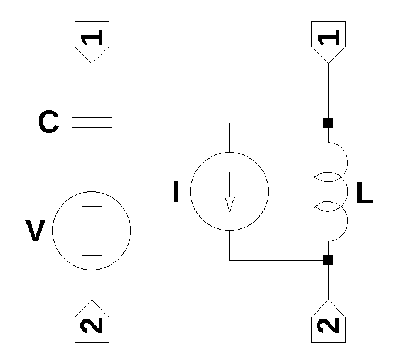
The following Python libraries are used in this notebook.
10.3 Capacitor Initial Conditions
In the circuit shown below, there are three circuit elements, the voltage source \(V_1\), \(C_1\) and \(R_1\), all elements are arranged in series. The value of \(V_1\) is considered the capacitor’s initial condition of having a voltage equal to \(V_1=1\) at time \(t=0\).
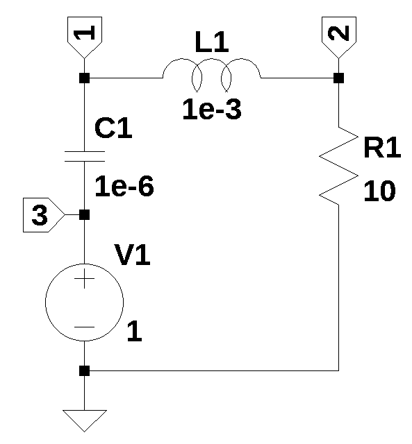
The circuit was drawn using LTSpice and the netlist was exported and copied below.
Example_1_net_list = '''
* Initial_conditions_example_1_v1.asc
L1 1 2 1e-3
C1 1 3 1e-6
R1 2 0 10
V1 3 0 1
'''The MNA equations are generated from the function SymMNA.smna.
report, network_df, i_unk_df, A, X, Z = SymMNA.smna(Example_1_net_list)The code below assembles the network equations from the MNA matrices and displays the equations.
# Put matrices into SymPy
X = Matrix(X)
Z = Matrix(Z)
# put the matrices into equation form
NE_sym = Eq(A*X,Z)
# free symbols are entered as SymPy variables
var(str(NE_sym.free_symbols).replace('{','').replace('}',''))
# the element values are put into a dictionary
element_values = SymMNA.get_part_values(network_df) # get element values from netlist
# display the equations
temp = ''
for i in range(shape(NE_sym.lhs)[0]):
temp += '${:s} = {:s}$<br>'.format(latex(NE_sym.rhs[i]),latex(NE_sym.lhs[i]))
Markdown(temp)\(0 = C_{1} s v_{1} - C_{1} s v_{3} + I_{L1}\)
\(0 = - I_{L1} + \frac{v_{2}}{R_{1}}\)
\(0 = - C_{1} s v_{1} + C_{1} s v_{3} + I_{V1}\)
\(V_{1} = v_{3}\)
\(0 = - I_{L1} L_{1} s + v_{1} - v_{2}\)
Initial conditions for the capacitor \(C_1\) is set by making \(V_1\) a step voltage equal to the value of the initial voltage condition. \(1/s\) is substituted for the value of \(V_1\).
element_values[V1] = element_values[V1]/s
NE_ic = NE_sym.subs(element_values)
# display the equations
temp = ''
for i in range(shape(NE_ic.lhs)[0]):
temp += '${:s} = {:s}$<br>'.format(latex(NE_ic.rhs[i]),latex(NE_ic.lhs[i]))
Markdown(temp)\(0 = I_{L1} + 1.0 \cdot 10^{-6} s v_{1} - 1.0 \cdot 10^{-6} s v_{3}\)
\(0 = - I_{L1} + 0.1 v_{2}\)
\(0 = I_{V1} - 1.0 \cdot 10^{-6} s v_{1} + 1.0 \cdot 10^{-6} s v_{3}\)
\(\frac{1.0}{s} = v_{3}\)
\(0 = - 0.001 I_{L1} s + v_{1} - v_{2}\)
Solve the network equations and display the results.
U_ic = solve(NE_ic,X)
temp = ''
for i in U_ic.keys():
temp += '${:s} = {:s}$<br>'.format(latex(i),latex(U_ic[i]))
Markdown(temp)\(v_{1} = \frac{s + 10000.0}{s^{2} + 10000.0 s + 1000000000.0}\)
\(v_{2} = \frac{10000.0}{s^{2} + 10000.0 s + 1000000000.0}\)
\(v_{3} = \frac{1}{s}\)
\(I_{V1} = - \frac{1000.0}{s^{2} + 10000.0 s + 1000000000.0}\)
\(I_{L1} = \frac{1000.0}{s^{2} + 10000.0 s + 1000000000.0}\)
The expression for the voltage at node 1 is obtained by referencing the \(v_1\) as shown below. nsimplify() is used to replace floats by whole numbers if possible. This makes it easier for Sympy to find the inverse Laplace transform.
node_1_voltage_s = U_ic[v1].nsimplify()
node_1_voltage_s\(\displaystyle \frac{s + 10000}{s^{2} + 10000 s + 1000000000}\)
Declare the symbol \(t\) to be used as the time variable.
t = symbols('t',positive=True) # t > 0Find the inverse Laplace transform using the SymPy function, inverse_laplace_transform.
node_1_voltage_t = inverse_laplace_transform(node_1_voltage_s, s, t)
node_1_voltage_t\(\displaystyle \frac{\left(\sqrt{39} \sin{\left(5000 \sqrt{39} t \right)} + 39 \cos{\left(5000 \sqrt{39} t \right)}\right) e^{- 5000 t}}{39}\)
Use lambdify to generate a function of time.
func_node_1_voltage_t = lambdify(t, node_1_voltage_t) The inverse Laplace is obtained for node voltage 2 with the following code.
node_2_voltage_s = U_ic[v2].nsimplify()
node_2_voltage_s\(\displaystyle \frac{10000}{s^{2} + 10000 s + 1000000000}\)
node_2_voltage_t = inverse_laplace_transform(node_2_voltage_s, s, t)
node_2_voltage_t\(\displaystyle \frac{2 \sqrt{39} e^{- 5000 t} \sin{\left(5000 \sqrt{39} t \right)}}{39}\)
Use lambdify to generate a function of time.
func_node_2_voltage_t = lambdify(t, node_2_voltage_t) Plot the voltages for nodes 1 and 2.
x_axis = np.linspace(0, 1e-3, 2000, endpoint=True)
plt.title('Node voltage')
plt.plot(x_axis*1e3, func_node_1_voltage_t(x_axis),'-r',label='v1(t)')
plt.plot(x_axis*1e3, func_node_2_voltage_t(x_axis),'-b',label='v2(t)')
plt.ylabel('volts')
plt.xlabel('time, msec')
plt.legend()
plt.grid()
plt.show()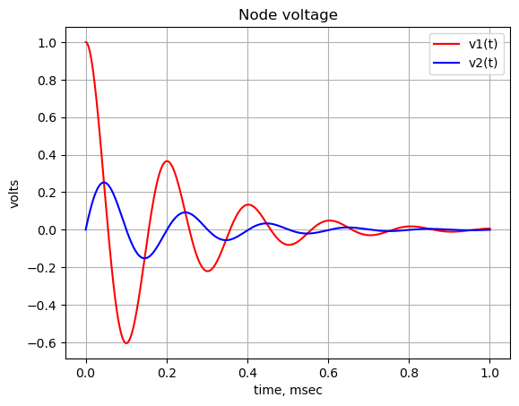
The results are verified by LTSpice as shown below.
The current in the capacitor can be obtained by looking at the current from \(V_1\) which is the same as \(I_{V}\).
V1_current_s = U_ic[I_V1].nsimplify()
V1_current_s\(\displaystyle - \frac{1000}{s^{2} + 10000 s + 1000000000}\)
V1_current_t = inverse_laplace_transform(V1_current_s, s, t)
V1_current_t\(\displaystyle - \frac{\sqrt{39} e^{- 5000 t} \sin{\left(5000 \sqrt{39} t \right)}}{195}\)
func_V1_current_t = lambdify(t, V1_current_t) The current in \(L_1\) can also be obtained as follows:
L1_current_s = U_ic[I_L1].nsimplify()
L1_current_s\(\displaystyle \frac{1000}{s^{2} + 10000 s + 1000000000}\)
L1_current_t = inverse_laplace_transform(L1_current_s, s, t)
L1_current_t\(\displaystyle \frac{\sqrt{39} e^{- 5000 t} \sin{\left(5000 \sqrt{39} t \right)}}{195}\)
func_L1_current_t = lambdify(t, L1_current_t) The plot below shows the current flowing in \(V_1\) and \(L_1\) versus time.
plt.title('Current')
plt.plot(x_axis*1e3, func_V1_current_t(x_axis),'-r',label='V1 current')
plt.plot(x_axis*1e3, func_L1_current_t(x_axis),'-b',label='L1 current')
plt.ylabel('i(t), amps')
plt.xlabel('time, msec')
plt.legend()
plt.grid()
plt.show()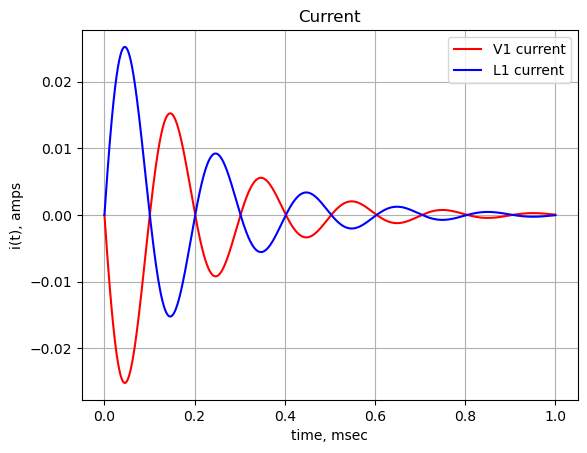
The results obtained above can be verified by comparing the LTSpice solution plotted below. The above matches LTSpice when:
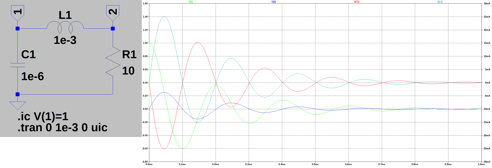
10.4 Inductor Initial Conditions
The initial conditions for an inductor are explored using the circuit shown below. The circuit elements are arranged in parallel. \(I_1\) is used to set the initial current present in \(L_1\) at \(t=0\).
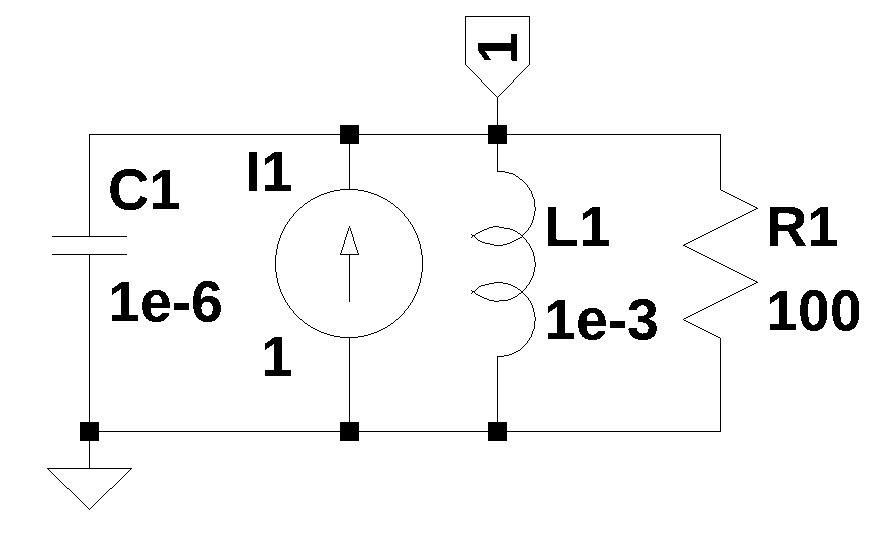
The netlist for the circuit was exported from LTSpice and copied below.
Example_2_net_list = '''
* Initial_conditions_example_2_v1.asc
L1 1 0 1e-3
C1 1 0 1e-6
R1 1 0 100
I1 0 1 1
'''The MNA equations are generated from the function SymMNA.smna.
report, network_df, i_unk_df, A, X, Z = SymMNA.smna(Example_2_net_list)The code below assembles the network equations from the MNA matrices and displays the equations.
# Put matrices into SymPy
X = Matrix(X)
Z = Matrix(Z)
# put the matrices into equation form
NE_sym = Eq(A*X,Z)
# free symbols are entered as SymPy variables
var(str(NE_sym.free_symbols).replace('{','').replace('}',''))
# the element values are put into a dictionary
element_values = SymMNA.get_part_values(network_df) # get element values from netlist
# display the equations
temp = ''
for i in range(shape(NE_sym.lhs)[0]):
temp += '${:s} = {:s}$<br>'.format(latex(NE_sym.rhs[i]),latex(NE_sym.lhs[i]))
Markdown(temp)\(I_{1} = I_{L1} + v_{1} \left(C_{1} s + \frac{1}{R_{1}}\right)\)
\(0 = - I_{L1} L_{1} s + v_{1}\)
Initial conditions for \(L_1\) is set by making \(I_1\) a step current equal to the value of the initial current condition. \(1/s\) is substituted for the value of \(I_1\).
element_values[I1] = element_values[I1]/s
NE_ic = NE_sym.subs(element_values)
# display the equations
temp = ''
for i in range(shape(NE_ic.lhs)[0]):
temp += '${:s} = {:s}$<br>'.format(latex(NE_ic.rhs[i]),latex(NE_ic.lhs[i]))
Markdown(temp)\(\frac{1.0}{s} = I_{L1} + v_{1} \cdot \left(1.0 \cdot 10^{-6} s + 0.01\right)\)
\(0 = - 0.001 I_{L1} s + v_{1}\)
Solve the network equations and display the results.
U_ic = solve(NE_ic,X)
temp = ''
for i in U_ic.keys():
temp += '${:s} = {:s}$<br>'.format(latex(i),latex(U_ic[i]))
Markdown(temp)\(v_{1} = \frac{1000000.0}{s^{2} + 10000.0 s + 1000000000.0}\)
\(I_{L1} = \frac{1000000000.0}{s^{3} + 10000.0 s^{2} + 1000000000.0 s}\)
The voltage at node 1 is obtained as follows:
node_1_voltage_s = U_ic[v1].nsimplify()
node_1_voltage_s\(\displaystyle \frac{1000000}{s^{2} + 10000 s + 1000000000}\)
node_1_voltage_t = inverse_laplace_transform(node_1_voltage_s, s, t)
node_1_voltage_t\(\displaystyle \frac{200 \sqrt{39} e^{- 5000 t} \sin{\left(5000 \sqrt{39} t \right)}}{39}\)
Use lambdify to generate a function of time.
func_node_1_voltage_t = lambdify(t, node_1_voltage_t) Plot the voltage at node 2.
x_axis = np.linspace(0, 1e-3, 2000, endpoint=True)
plt.title('Node 1 voltage')
plt.plot(x_axis*1e3, func_node_1_voltage_t(x_axis),'-b')
plt.ylabel('v(t), volts')
plt.xlabel('time, msec')
plt.grid()
plt.show()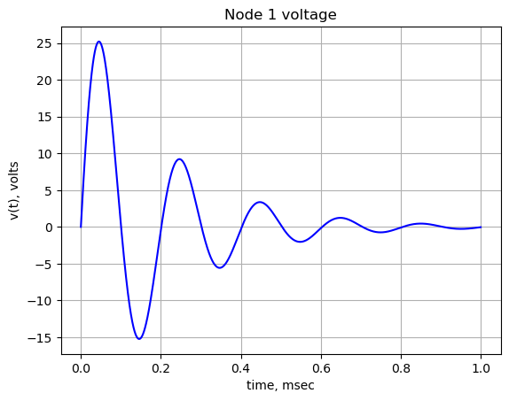
The current through \(L_1\) can be obtained by:
L1_current_s = U_ic[I_L1].nsimplify()
L1_current_s\(\displaystyle \frac{1000000000}{s^{3} + 10000 s^{2} + 1000000000 s}\)
The IPython magic function is used to track the time it takes for SymPy to obtain the inverse Laplace transform, in this case for my computer is a bit over 1 minute.
%%time
L1_current_t = inverse_laplace_transform(L1_current_s, s, t)CPU times: user 1min 11s, sys: 16.7 ms, total: 1min 11s
Wall time: 1min 11sL1_current_t\(\displaystyle \left(e^{5000 t} - \frac{\sqrt{39} \sin{\left(5000 \sqrt{39} t \right)}}{39} - \cos{\left(5000 \sqrt{39} t \right)}\right) e^{- 5000 t}\)
func_L1_current_t = lambdify(t, L1_current_t) The plot below shows the inductor current versus time.
plt.title('Current')
plt.plot(x_axis*1e3, func_L1_current_t(x_axis),'-b',label='L1 current')
plt.ylabel('i(t), amps')
plt.xlabel('time, msec')
plt.legend()
plt.grid()
plt.show()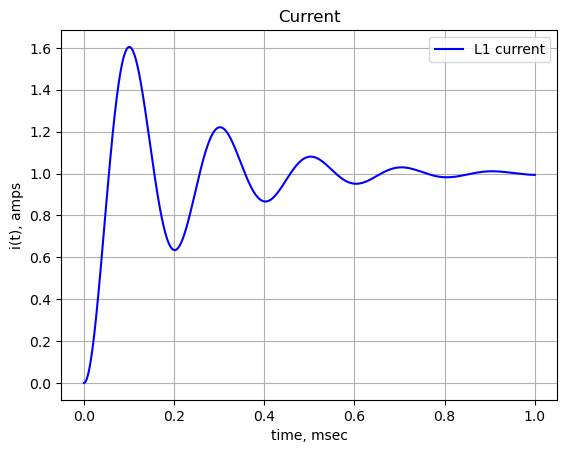
As you can see the steady state solution for the inductor current is 1 amp. However, this is not what we would expect when \(L_1\) has an initial condition of \(i_{L_1}=1\), since \(i(t)\) should \(\to 0\), due to the losses in the circuit from \(R_1\). Using \(\frac{I_1}{s}\) to represent the initial conditions in \(L_1\) produces correct node voltages, but the solution for the current in \(L_1\) needs to be adjusted. In this example, offsetting the current in the inductor by -1 would correct the result at \(t=0\) and as \(t \to \infty\).
The capacitor current and node voltage agree with LTSpice.
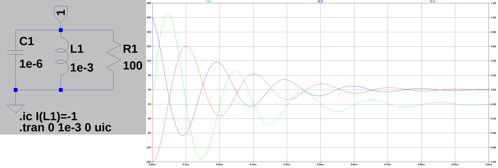
10.5 Initial Conditions Test Circuit
In this example, a circuit with initial conditions consisting of a capacitor with an initial voltage and an inductor with initial current is analysed. The circuit in Figure 10.6 has seven branches and four nodes. \(V_1\) represents the initial voltage on \(C_2\) and \(I_1\) represents the initial current in \(L_2\).
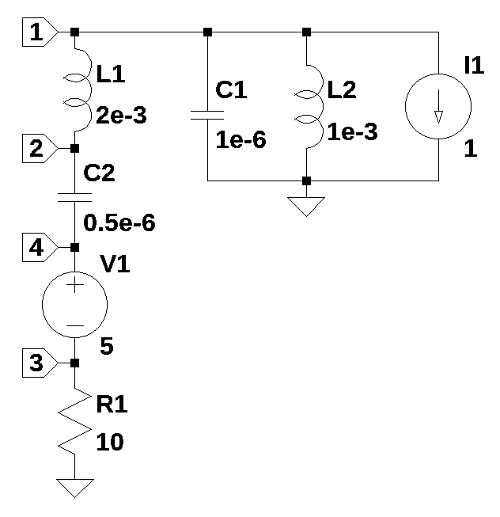
The circuit was drawn using LTSpice and the netlist was pasted into the code.
Example_3_net_list = '''
* Initial_conditions_example_3_v1.asc
L1 1 2 2e-3
C2 2 4 0.5e-6
R1 3 0 10
C1 1 0 1e-6
L2 1 0 1e-3
V1 4 3 5
I1 1 0 1
'''The MNA equations are generated from the function SymMNA.smna.
report, network_df, i_unk_df, A, X, Z = SymMNA.smna(Example_3_net_list)The code below assembles the network equations from the MNA matrices and displays the equations.
# Put matrices into SymPy
X = Matrix(X)
Z = Matrix(Z)
# put the matrices into equation form
NE_sym = Eq(A*X,Z)
# free symbols are entered as SymPy variables
var(str(NE_sym.free_symbols).replace('{','').replace('}',''))
# the element values are put into a dictionary
element_values = SymMNA.get_part_values(network_df) # get element values from netlist
# display the equations
temp = ''
for i in range(shape(NE_sym.lhs)[0]):
temp += '${:s} = {:s}$<br>'.format(latex(NE_sym.rhs[i]),latex(NE_sym.lhs[i]))
Markdown(temp)\(- I_{1} = C_{1} s v_{1} + I_{L1} + I_{L2}\)
\(0 = C_{2} s v_{2} - C_{2} s v_{4} - I_{L1}\)
\(0 = - I_{V1} + \frac{v_{3}}{R_{1}}\)
\(0 = - C_{2} s v_{2} + C_{2} s v_{4} + I_{V1}\)
\(V_{1} = - v_{3} + v_{4}\)
\(0 = - I_{L1} L_{1} s + v_{1} - v_{2}\)
\(0 = - I_{L2} L_{2} s + v_{1}\)
The initial conditions for \(C_2\) and \(L_2\) are set by \(V_1\) and \(I_1\). A step function with a value of 5 is used for \(V_1\) and 1 for \(I_1\).
element_values[V1] = element_values[V1]/s
element_values[I1] = element_values[I1]/s
NE_ic = NE_sym.subs(element_values)
# display the equations
temp = ''
for i in range(shape(NE_ic.lhs)[0]):
temp += '${:s} = {:s}$<br>'.format(latex(NE_ic.rhs[i]),latex(NE_ic.lhs[i]))
Markdown(temp)\(- \frac{1.0}{s} = I_{L1} + I_{L2} + 1.0 \cdot 10^{-6} s v_{1}\)
\(0 = - I_{L1} + 5.0 \cdot 10^{-7} s v_{2} - 5.0 \cdot 10^{-7} s v_{4}\)
\(0 = - I_{V1} + 0.1 v_{3}\)
\(0 = I_{V1} - 5.0 \cdot 10^{-7} s v_{2} + 5.0 \cdot 10^{-7} s v_{4}\)
\(\frac{5.0}{s} = - v_{3} + v_{4}\)
\(0 = - 0.002 I_{L1} s + v_{1} - v_{2}\)
\(0 = - 0.001 I_{L2} s + v_{1}\)
Solve the network equations and display the results.
U_ic = solve(NE_ic,X)
temp = ''
for i in U_ic.keys():
temp += '${:s} = {:s}$<br>'.format(latex(i),latex(U_ic[i]))
Markdown(temp)\(v_{1} = \frac{- 1000000.0 s^{2} - 2500000000.0 s - 1.0 \cdot 10^{15}}{s^{4} + 5000.0 s^{3} + 2500000000.0 s^{2} + 5000000000000.0 s + 1.0 \cdot 10^{18}}\)
\(v_{2} = \frac{5.0 s^{3} + 2500000000.0 s - 1.0 \cdot 10^{15}}{s^{4} + 5000.0 s^{3} + 2500000000.0 s^{2} + 5000000000000.0 s + 1.0 \cdot 10^{18}}\)
\(v_{3} = \frac{- 25000.0 s^{2} - 5000000000.0 s - 25000000000000.0}{s^{4} + 5000.0 s^{3} + 2500000000.0 s^{2} + 5000000000000.0 s + 1.0 \cdot 10^{18}}\)
\(v_{4} = \frac{5.0 s^{4} + 7500000000.0 s^{2} + 5.0 \cdot 10^{18}}{s^{5} + 5000.0 s^{4} + 2500000000.0 s^{3} + 5000000000000.0 s^{2} + 1.0 \cdot 10^{18} s}\)
\(I_{V1} = \frac{- 2500.0 s^{2} - 500000000.0 s - 2500000000000.0}{s^{4} + 5000.0 s^{3} + 2500000000.0 s^{2} + 5000000000000.0 s + 1.0 \cdot 10^{18}}\)
\(I_{L1} = \frac{- 2500.0 s^{2} - 500000000.0 s - 2500000000000.0}{s^{4} + 5000.0 s^{3} + 2500000000.0 s^{2} + 5000000000000.0 s + 1.0 \cdot 10^{18}}\)
\(I_{L2} = \frac{- 1000000000.0 s^{2} - 2500000000000.0 s - 1.0 \cdot 10^{18}}{s^{5} + 5000.0 s^{4} + 2500000000.0 s^{3} + 5000000000000.0 s^{2} + 1.0 \cdot 10^{18} s}\)
The voltage at node 1 is:
node_1_voltage_s = U_ic[v1].nsimplify()
node_1_voltage_s\(\displaystyle \frac{- 1000000 s^{2} - 2500000000 s - 1000000000000000}{s^{4} + 5000 s^{3} + 2500000000 s^{2} + 5000000000000 s + 1000000000000000000}\)
The function listed below,Inv_Laplace_By_PFE, performs an inverse Laplace transform on functions that are too large for the standard SymPy built in function, inverse_laplace_transform. My code below follows the answer given by Davide_sd in zorka5 (2024).
def Inv_Laplace_By_PFE(func_s, start, stop, num_points):
"""Inverse Laplace Transform By Partial Fraction Expansion (Inv_Laplace_By_PFE).
This code was inspired by the answer given by Davide_sd for the question at
https://stackoverflow.com/questions/77876224/calculating-inverse-laplace-transform-using-python-or-matlab
Args:
func_s: a rational function of 's' with real valued coefficients
The following parameters are used in np.linspace, which is called at the end of this procedure.
start: start time
stop: stop time
num_points: number of points
Returns:
Array of the time response.
"""
n, d = fraction(func_s)
n = n.expand() # expand the numerator to get the individual additive terms
# Each of the numerator terms can be put over the common denominator.
if len(Add.make_args(n)) > 1: # check for the number of additive terms in the numerator
terms = [a / d for a in n.args]
else:
terms = [n/d]
'''
The following code processes each of the terms obtained above.
- the SciPy function [residue](https://docs.scipy.org/doc/scipy/reference/generated/scipy.signal.residue.html) is used to get the residues and poles of the partial-fraction expansion
- r: Residues corresponding to the poles. For repeated poles, the residues are ordered to correspond to ascending by power fractions.
- p: Poles ordered by magnitude in ascending order.
- k: Coefficients of the direct polynomial term.
When computing the inverse Laplace transform, the Coefficients (k) are ignored since these transform to a Dirac delta function, $\delta (t)$ and don't need to be plotted.
'''
N = []
for p1 in terms:
# use the SciPy residue function to get the partial-fraction expansion residues and poles
n, d = fraction(p1)
cn = Poly(n, s).all_coeffs()
cd = Poly(d, s).all_coeffs()
r, p, k = signal.residue(cn, cd, tol=0.001, rtype='avg')
# build a symbolic expression for each of the residues and find the inverse Laplace of each one
z = 0
for i in range(len(r)):
m = (r[i]/(s-p[i]))
z += inverse_laplace_transform(m, s, t)
N.append(z)
# Each of these terms can be converted to a function using SymPy's [lambdify](https://docs.sympy.org/latest/modules/utilities/lambdify.html) function.
# Define the values for the x-axis of the plot and put into an array for plotting.
x = np.linspace(start, stop, num_points, endpoint=True)
array_x = np.zeros(len(x),dtype = complex)
for p in N:
array_x += lambdify(t, p)(x)
return array_xCall the function Inv_Laplace_By_PFE and get an array of the transient response for node 1.
node_1_x_values = Inv_Laplace_By_PFE(node_1_voltage_s, 0, 1e-3, 2000)Get the expression for node 2, display and do the inverse Laplace transform.
node_2_voltage_s = U_ic[v2].nsimplify()
node_2_voltage_s\(\displaystyle \frac{5 s^{3} + 2500000000 s - 1000000000000000}{s^{4} + 5000 s^{3} + 2500000000 s^{2} + 5000000000000 s + 1000000000000000000}\)
node_2_x_values = Inv_Laplace_By_PFE(node_2_voltage_s, 0, 1e-3, 2000)Get the expression for node 3, display and do the inverse Laplace transform.
node_3_voltage_s = U_ic[v3].nsimplify()
node_3_voltage_s\(\displaystyle \frac{- 25000 s^{2} - 5000000000 s - 25000000000000}{s^{4} + 5000 s^{3} + 2500000000 s^{2} + 5000000000000 s + 1000000000000000000}\)
node_3_x_values = Inv_Laplace_By_PFE(node_3_voltage_s, 0, 1e-3, 2000)The plot below shows the node voltages versus time.
x = np.linspace(0, 1e-3, 2000, endpoint=True)
plt.title('Node voltage vs time')
plt.plot(x*1000, np.real(node_1_x_values),'-g',label='v1(t)')
plt.plot(x*1000, np.real(node_2_x_values),'-b',label='v2(t)')
plt.plot(x*1000, np.real(node_3_x_values),'-r',label='v3(t)')
plt.ylabel('v(t), volts')
plt.xlabel('time, ms')
plt.legend()
plt.grid()
plt.show()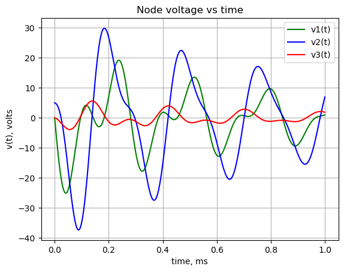
The results obtained from the Python code agree with LTSpice as shown below.
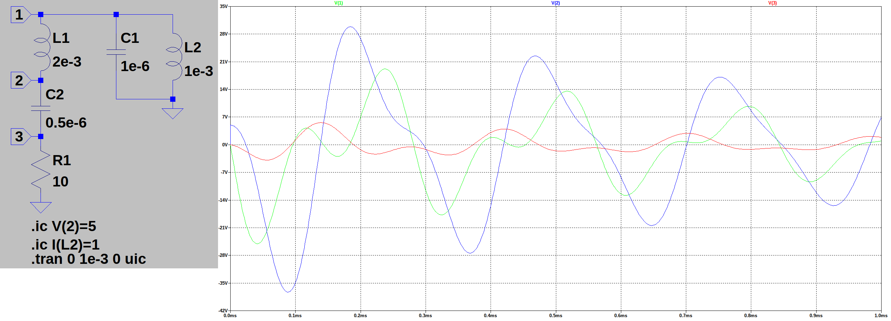
10.6 Summary
In this chapter, MNA was used to analyze circuits which had initial conditions defined for the capacitors and inductors.
- A capacitor’s initial voltage condition was represented by step function voltage source
- An inductor’s initial current condition was represented by a step function current source, however, the solution for the inductor’s current needs a correction factor.